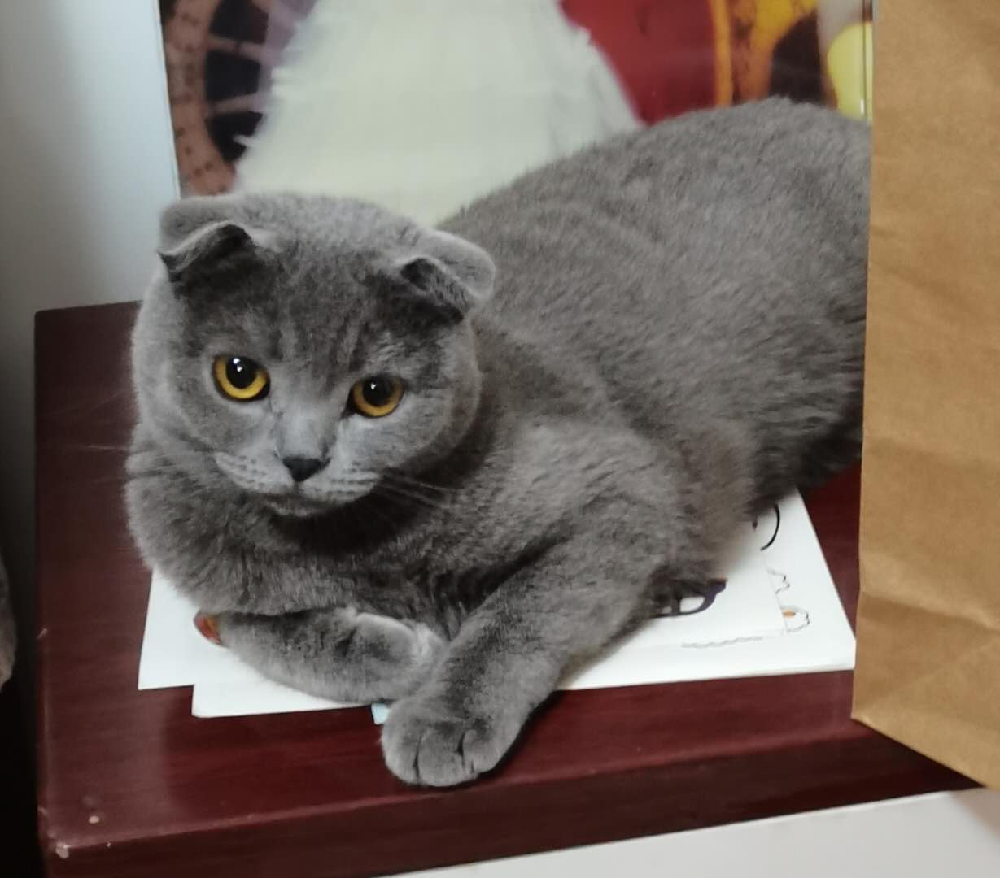
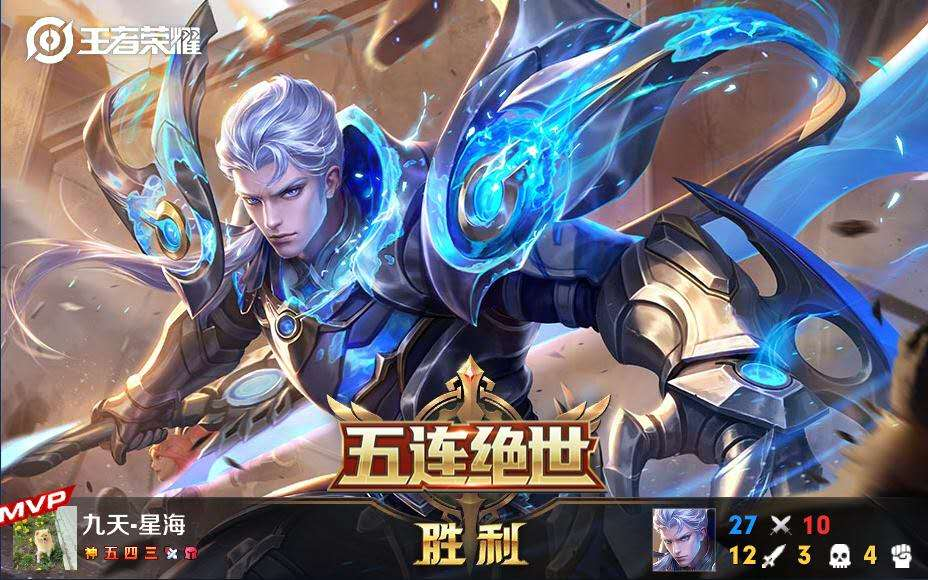
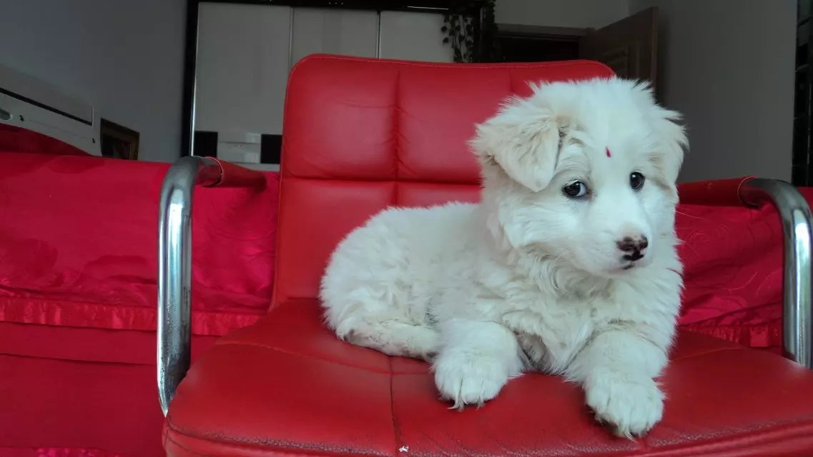
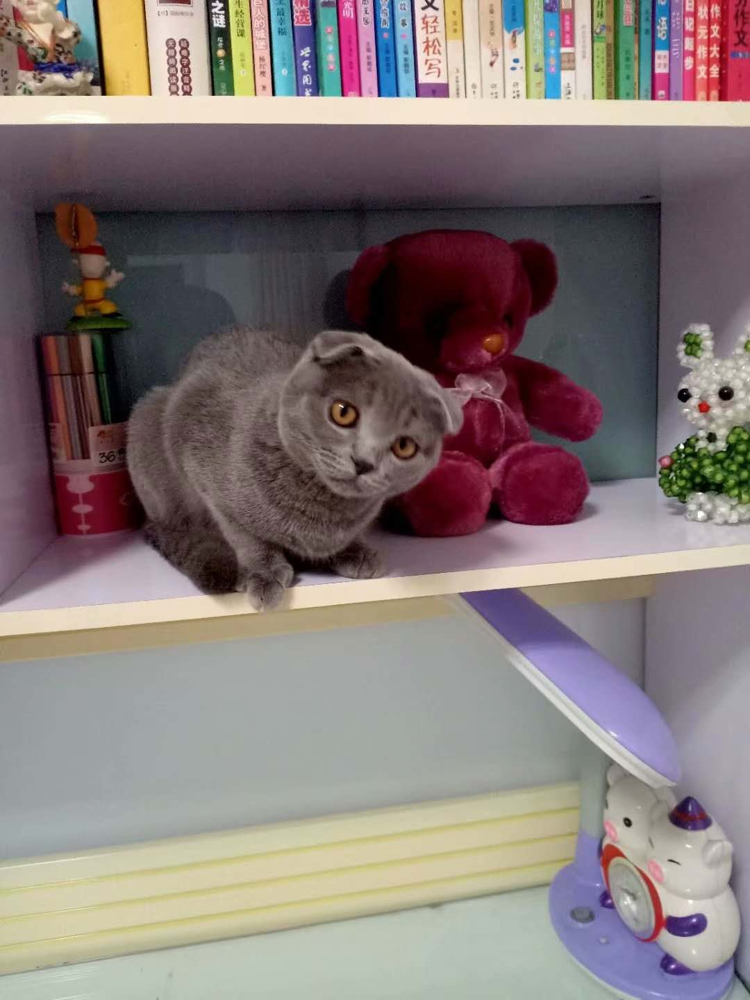
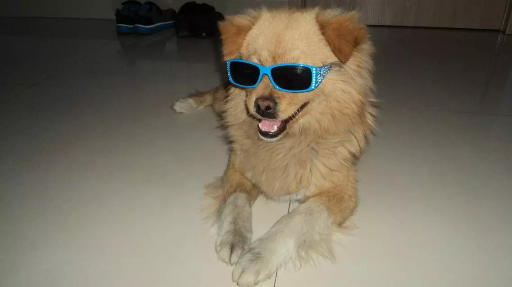

注意音量
|  | 这，就是我——家的猫，是不是很萌呀。我叫贾振宇，来自内蒙古自治区鄂尔多斯市，目前就读于北京大学医学部，专业药学。本人未婚，单身，年龄20，欢迎有意者私戳。。。（开个玩笑） |
本人有些闷骚，没啥兴趣爱好，干啥啥不行，羽毛球、乒乓球、象棋、陆战棋都会一些但都是菜鸟……钟爱玄幻小说，比如斗罗大陆、龙族等（基本都是唐家三少、江南、天蚕土豆的书）；喜欢王者荣耀,辅助、中单、adc、对抗、打野都可（可能技术不怎么样）
自幼喜欢小猫小狗,从小到大御狗无数，不下十只，虽然它们离去会很悲伤，但是和它们相处的日子是十分愉快的，下面请大家观赏
  报考了药学专业，但对这门专业的了解却远远不够，对大学的生活也尚不适应，也不是很清楚未来的方向，希望能在大学的生活中找到属于自己的路吧。
最后留下联系方式：(五排开黑呀，hi起来)